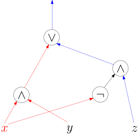

2. Boolesche Schaltkreise (nicht im Sommersemester 2025)./wly/02/__parent.wly:2:5
Boolesche Schaltkreise sind ein idealisiertes Modell./wly/02/__parent.wly:4:5echter elektronischer Schaltkreise. Als primitive./wly/02/__parent.wly:5:5Bausteine haben wir Boolesche Operatoren, auch./wly/02/__parent.wly:6:5./wly/02/__parent.wly:7:5Gatter./wly/02/__parent.wly:7:6
(englisch
./wly/02/__parent.wly:7:13gates./wly/02/__parent.wly:7:25)./wly/02/__parent.wly:7:31
genannt, die mehrere./wly/02/__parent.wly:7:31(typischerweise ein oder zwei) Signale zu einem./wly/02/__parent.wly:8:5Ausgabe-Signal kombinieren. Die Signale können nur./wly/02/__parent.wly:9:5zwei Werte annehmen: wahr/falsch bzw. 1/0 bzw../wly/02/__parent.wly:10:5./wly/02/__parent.wly:11:5true/false./wly/02/__parent.wly:11:6../wly/02/__parent.wly:11:17
Hier sehen Sie die drei üblichsten./wly/02/__parent.wly:11:17Gatter:./wly/02/__parent.wly:12:5
./public/img/circuits/and-or-not-gates.svg
Von links nach rechts sind dies: das Und-Gatter./wly/02/__parent.wly:19:5./wly/02/__parent.wly:20:5(./wly/02/__parent.wly:20:5and-gate./wly/02/__parent.wly:20:7),./wly/02/__parent.wly:20:16
Oder-Gatter
./wly/02/__parent.wly:20:16(./wly/02/__parent.wly:20:16or-gate./wly/02/__parent.wly:20:33)./wly/02/__parent.wly:20:41
und das./wly/02/__parent.wly:20:41Nicht-Gatter
./wly/02/__parent.wly:21:5(./wly/02/__parent.wly:21:5not-gate./wly/02/__parent.wly:21:20)../wly/02/__parent.wly:21:29
In C, C++ und Java kennen./wly/02/__parent.wly:21:29Sie diese Booleschen Operatoren als
./wly/02/__parent.wly:22:5&&./wly/02/__parent.wly:22:42,./wly/02/__parent.wly:22:45./wly/02/__parent.wly:22:45||./wly/02/__parent.wly:22:48
und./wly/02/__parent.wly:22:51./wly/02/__parent.wly:23:5!./wly/02/__parent.wly:23:6../wly/02/__parent.wly:23:8
Was diese Operatoren
./wly/02/__parent.wly:23:8tun./wly/02/__parent.wly:23:32,./wly/02/__parent.wly:23:36
können wir als./wly/02/__parent.wly:23:36./wly/02/__parent.wly:24:5Wahrheitstabelle./wly/02/__parent.wly:24:6
darstellen. Wir listen alle./wly/02/__parent.wly:24:23Kombinationen für
./wly/02/__parent.wly:25:5$x,y$
auf und schreiben in jede./wly/02/__parent.wly:25:28Zeile auch den Wert, den der Operator ausgibt../wly/02/__parent.wly:26:5
Die dritte Zeile der mittleren Tabelle sagt./wly/02/__parent.wly:52:5beispielsweise aus, dass
./wly/02/__parent.wly:53:5$1 \vee 0 = 1$
gilt../wly/02/__parent.wly:53:44Vielleicht wünschen Sie sich noch mehr Gates, zum./wly/02/__parent.wly:54:5Beispiel ein if-then-else-Gate mit drei Inputs./wly/02/__parent.wly:55:5./wly/02/__parent.wly:56:5$x,y,z$,./wly/02/__parent.wly:56:12
welches
./wly/02/__parent.wly:56:12$y$
ausgibt, wenn
./wly/02/__parent.wly:56:25$x$
wahr ist und./wly/02/__parent.wly:56:43ansonsten
./wly/02/__parent.wly:57:5$z$
ausgibt. So ein Gate können Sie sich./wly/02/__parent.wly:57:18einfach aus And, Or, Not bauen:./wly/02/__parent.wly:58:5
Jeder Schaltkreis
./wly/02/__parent.wly:68:5berechnet./wly/02/__parent.wly:68:24
eine Funktion (formale./wly/02/__parent.wly:68:34Definition weiter unten). Informell gesprochen, wenn./wly/02/__parent.wly:69:5wir Wahrheitswerte (0/1) in die Input-Gates./wly/02/__parent.wly:70:5reinstecken, dann fließen diese durch den Schaltkreis./wly/02/__parent.wly:71:5und werden von den AND/OR/NOT-Gates entsprechend ihrer./wly/02/__parent.wly:72:5Funktion kombiniert und werden schließlich an den./wly/02/__parent.wly:73:5Output-Gates ausgegeben:./wly/02/__parent.wly:74:5
./public/img/circuits/if-then-else-gate-with-values.svgDas if-then-else-Gate mit einer konkreten Belegung./wly/02/__parent.wly:82:13und einem Ausgabewert./wly/02/__parent.wly:83:13
Übungsaufgabe 2.1./wly/02/__parent.wly:85:6./wly/02/__parent.wly:85:24Bauen Sie folgende Gates aus And-, Or- und Not-Gates./wly/02/__parent.wly:86:9zusammen:./wly/02/__parent.wly:87:9
Ein XOR-Gate
./wly/02/__parent.wly:91:17$x \oplus y$../wly/02/__parent.wly:91:42
Es gibt 1 aus, wenn einer./wly/02/__parent.wly:91:42der beiden Inputs 1 ist und der andere 0../wly/02/__parent.wly:92:17
Ein Majority-Gate
./wly/02/__parent.wly:95:17$Maj(x,y,z)$../wly/02/__parent.wly:95:47
Es gibt 1 aus, wenn./wly/02/__parent.wly:95:47mindestens zwei seiner Inputs 1 ist../wly/02/__parent.wly:96:17
Ein
./wly/02/__parent.wly:99:17$n$-faches./wly/02/__parent.wly:99:24
XOR-Gate./wly/02/__parent.wly:99:24
./public/img/circuits/n-fold-xor.svg
welches 1 ausgibt, wenn eine ungerade Anzahl seiner./wly/02/__parent.wly:106:17Inputs auf 1 stehen../wly/02/__parent.wly:107:17
Ein
./wly/02/__parent.wly:110:17$n$-faches./wly/02/__parent.wly:110:24
Majority-Gate./wly/02/__parent.wly:110:24./wly/02/__parent.wly:111:17$\mathrm{Maj}(x_1,\ldots,x_n)$,./wly/02/__parent.wly:111:47
welches 1 ausgibt,./wly/02/__parent.wly:111:47wenn mehr als
./wly/02/__parent.wly:112:17$n/2$
der Inputs auf 1 stehen. Sie./wly/02/__parent.wly:112:36können annehmen, dass
./wly/02/__parent.wly:113:17$n$
ungerade ist, wenn es Ihnen./wly/02/__parent.wly:113:42hilft. Können Sie vermeiden, dass Ihr Schaltkreis./wly/02/__parent.wly:114:17riesengroß wird? Kriegen Sie beispielsweise für einen./wly/02/__parent.wly:115:17Schaltkreis hin, den man realistischerweise herstellen./wly/02/__parent.wly:116:17kann?./wly/02/__parent.wly:117:17
Je nach Kontext kann es hilfreich sein, Gatter mit./wly/02/__parent.wly:119:5beliebig vielen Inputs zuzulassen, beispielsweise./wly/02/__parent.wly:120:5./wly/02/__parent.wly:121:5$x_1 \land x_2 \land \ldots \land x_n$
als ein Gate./wly/02/__parent.wly:121:43darzustellen:./wly/02/__parent.wly:122:5
./public/img/circuits/and-fan-in-n.svg
Man bezeichnet dies als AND-Gate mit einem Fan-in von./wly/02/__parent.wly:129:5./wly/02/__parent.wly:130:5$n$../wly/02/__parent.wly:130:8
Das "normale" AND-Gate hat einen Fan-in von 2../wly/02/__parent.wly:130:8Mit
./wly/02/__parent.wly:131:5$\lor$-./wly/02/__parent.wly:131:15
und
./wly/02/__parent.wly:131:15$\oplus$-Gates./wly/02/__parent.wly:131:29
geht das ganz analog../wly/02/__parent.wly:131:29Für andere Gates (wie zum Beispiel ein./wly/02/__parent.wly:132:5if-then-else-Gate) würde das keinen Sinn machen../wly/02/__parent.wly:133:5Größerer Fan-in ist aber nicht wirklich etwas neues./wly/02/__parent.wly:134:5unter der Sonne: Sie können jederzeit großen Fan-in./wly/02/__parent.wly:135:5durch kleinen simulieren:./wly/02/__parent.wly:136:5
./public/img/circuits/and-n-fold-linear-depth.svg
Also als geschachteltes AND, oder aber in Form eines./wly/02/__parent.wly:143:5Binärbaums:./wly/02/__parent.wly:144:5
./public/img/circuits/and-n-fold-log-depth.svg
Schaltkreise, wie wir sie in diesem Kapitel./wly/02/__parent.wly:151:5betrachten, sind immer azyklisch. Das heißt./wly/02/__parent.wly:152:5insbesondere, das Dinge mit "Feedback-Schleifen" wie./wly/02/__parent.wly:153:5Flipflops eben keine Schaltkreis in unserem Sinn sind:./wly/02/__parent.wly:154:5
./public/img/circuits/flipflop.svg
Das Flipflop zeigt ein interessantes Verhalten: wenn./wly/02/__parent.wly:161:5./wly/02/__parent.wly:162:5$\text{Reset} = 0$,./wly/02/__parent.wly:162:23./wly/02/__parent.wly:162:23$\text{Set} = 1$
ist, so ist der./wly/02/__parent.wly:162:41Ausgabe-Wert des unteren OR-Gates auf jeden Fall 1,./wly/02/__parent.wly:163:5und somit ist
./wly/02/__parent.wly:164:5$\bar{Q} = 0$;./wly/02/__parent.wly:164:32
somit sind wiederum./wly/02/__parent.wly:164:32beide Input-Werte des oberen OR-Gates 0 und
./wly/02/__parent.wly:165:5$Q = 1$../wly/02/__parent.wly:165:56./wly/02/__parent.wly:165:56Wenn
./wly/02/__parent.wly:166:5$\text{Reset} = 1$,./wly/02/__parent.wly:166:28./wly/02/__parent.wly:166:28$\text{Set} = 0$,./wly/02/__parent.wly:166:46
dann ist./wly/02/__parent.wly:166:46analog
./wly/02/__parent.wly:167:5$Q = 0$,./wly/02/__parent.wly:167:19./wly/02/__parent.wly:167:19$\bar{Q} = 1$../wly/02/__parent.wly:167:34
Wenn./wly/02/__parent.wly:167:34./wly/02/__parent.wly:168:5$\text{Reset} = \text{Set} = 0$,./wly/02/__parent.wly:168:36
dann leiten beide./wly/02/__parent.wly:168:36OR-Gates einfach die Werte der anderen, von rechts./wly/02/__parent.wly:169:5kommenden Kabel durch, und somit gilt./wly/02/__parent.wly:170:5./wly/02/__parent.wly:171:5$Q = \neg{\bar{Q}}$
und
./wly/02/__parent.wly:171:24$\bar{Q} = \neg{Q}$;./wly/02/__parent.wly:171:48
das./wly/02/__parent.wly:171:48heißt, die Werte, die zuvor bestanden, bestehen./wly/02/__parent.wly:172:5weiter. Das Flipflop implementiert somit einen./wly/02/__parent.wly:173:51-Bit-Speicher (die Kombination./wly/02/__parent.wly:174:5./wly/02/__parent.wly:175:5$\text{Set} = \text{Reset} = 1$
würde./wly/02/__parent.wly:175:36./wly/02/__parent.wly:176:5$Q = \bar{Q} = 0$
erzeugen und gilt als illegale./wly/02/__parent.wly:176:22Eingabe). Ein Flipflop hat somit einen inneren./wly/02/__parent.wly:177:5Zustand. Die Schaltkreise in diesem Kapitel haben./wly/02/__parent.wly:178:5keinen inneren Zustand: die Werte der Ausgabe-Gates./wly/02/__parent.wly:179:5sind vollständig durch die Werte der Input-Gates./wly/02/__parent.wly:180:5determiniert. Wir sind nun bereit für eine formale./wly/02/__parent.wly:181:5Definition von Schaltkreisen../wly/02/__parent.wly:182:5
Definition 2.1 (Boolesche Schaltkreise)./wly/02/__parent.wly:184:6
Ein Boolescher Schaltkreis./wly/02/__parent.wly:185:35ist ein gerichteter, azyklischer Graph (englisch./wly/02/__parent.wly:186:9directed acyclic graph, kurz DAG), in welchem jeder./wly/02/__parent.wly:187:9Knoten entweder./wly/02/__parent.wly:188:9
ein Input-Gate ist und mit einer Input-Variable oder./wly/02/__parent.wly:192:17eine Booleschen Konstant (0 oder 1) beschriftet ist./wly/02/__parent.wly:193:17und keine eingehenden Kanten hat (in-degree 0), oder./wly/02/__parent.wly:194:17
mit AND-, OR- oder NOT beschriftet ist,./wly/02/__parent.wly:197:17
wobei die mit NOT beschrifteten Knoten genau eine./wly/02/__parent.wly:199:9eingehende Kante haben und die mit AND oder OR./wly/02/__parent.wly:200:9beschrifteten Knoten mindestens zwei eingehende Kanten./wly/02/__parent.wly:201:9haben. Mindestens ein Knoten ist als Output-Gate./wly/02/__parent.wly:202:9gekennzeichnet. Die Output-Gates sind ihrerseits mit./wly/02/__parent.wly:203:9Output-Variablen
./wly/02/__parent.wly:204:9$y_1, \ldots, y_m$
beschriftet../wly/02/__parent.wly:204:44
Oft haben wir es mit Schaltkreisen mit nur einem./wly/02/__parent.wly:206:5Output-Gate zu tun; in diesem Falle lassen wir die./wly/02/__parent.wly:207:5Beschriftung auch gerne weg, weil sie keine./wly/02/__parent.wly:208:5zusätzliche Information bringt. Wenn wir allen./wly/02/__parent.wly:209:5Input-Variablen eines Schaltkreises
./wly/02/__parent.wly:210:5$C$
einen./wly/02/__parent.wly:210:44Wahrheitswert zugewiesen bekommen haben, dann können./wly/02/__parent.wly:211:5wir den Schaltkreis von "unten" (Input-Gates) nach./wly/02/__parent.wly:212:5"oben" (Output-Gates) auswerten, indem eben jeder mit./wly/02/__parent.wly:213:5OR/AND/NOT beschriftete Knoten den ihm zugeordnete./wly/02/__parent.wly:214:5Booleschen Operator auswertet. Es ist klar, dass der./wly/02/__parent.wly:215:5Schaltkreis
./wly/02/__parent.wly:216:5$C$
eine
./wly/02/__parent.wly:216:20Funktion./wly/02/__parent.wly:216:27./wly/02/__parent.wly:216:36./wly/02/__parent.wly:217:5$f_C : \{0,1\}^n \to \{0,1\}^m$
berechnet. Oft./wly/02/__parent.wly:217:36schreiben wir einfach
./wly/02/__parent.wly:218:5$C : \{0,1\}^n \to \{0,1\}^m$../wly/02/__parent.wly:218:56
Beobachtung 2.2./wly/02/__parent.wly:220:6./wly/02/__parent.wly:220:24Ein Schaltkreis
./wly/02/__parent.wly:221:9$C$
mit
./wly/02/__parent.wly:221:28$n$
Input-Gates und
./wly/02/__parent.wly:221:36$m$./wly/02/__parent.wly:221:56Output-Gates berechnet eine Funktion./wly/02/__parent.wly:222:9./wly/02/__parent.wly:223:9$f_C : \{0,1\}^n \to \{0,1\}^m$
Es ist auch nicht weiter überraschend, dass es./wly/02/__parent.wly:225:5Schaltkreise für die gleiche Funktion geben kann (sie./wly/02/__parent.wly:226:5haben für die Funktion
./wly/02/__parent.wly:227:5$x_1 \land \ldots \land x_n$./wly/02/__parent.wly:227:56auch bereits drei verschiedene Schaltkreise gesehen,./wly/02/__parent.wly:228:5und im Rahmen der obigen Übungsaufgabe wohl auch./wly/02/__parent.wly:229:5mehrere Schaltkreise, die das gleiche tun, entwickelt../wly/02/__parent.wly:230:5
Definition 2.3./wly/02/__parent.wly:232:6./wly/02/__parent.wly:232:23Zwei Boolesche Schaltkreise
./wly/02/__parent.wly:233:9$C, C^{\prime}$
heißen./wly/02/__parent.wly:233:52äquivalent, wenn
./wly/02/__parent.wly:234:9$f_C = f_{C^{\prime}}$,./wly/02/__parent.wly:234:48
wenn sie./wly/02/__parent.wly:234:48also die gleiche Funktion berechnen. Wir schreiben./wly/02/__parent.wly:235:9./wly/02/__parent.wly:236:9$C \equiv C^{\prime}$../wly/02/__parent.wly:236:30
 ./public/img/circuits/and-or-not-gates.svg
./public/img/circuits/and-or-not-gates.svg
 ./public/img/circuits/and-n-fold-linear-depth.svg
./public/img/circuits/and-n-fold-linear-depth.svg
 ./public/img/circuits/and-n-fold-log-depth.svg
./public/img/circuits/and-n-fold-log-depth.svg